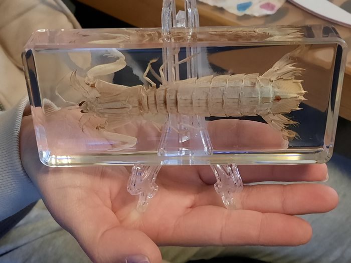

Fatos sobre o Stomatopoda.
Descrição
Stomatopoda (ou estomatópode), de nome cientifico Odontodactylus scyllarus, chamados popularmente de tamarutacas ou de lacraias-do-mar no Brasil, é uma ordem de crustáceos marinhos da subclasse Hoplocarida, que agrupa cerca de 400 espécies, caracterizadas principalmente pela morfologia da segunda pata torácica, que é modificada em apêndice subquelado, lembrando uma pata de louva-a-deus.
| Reino | Filo | Subfilo | Classe | Subclasse | Ordem |
|---|---|---|---|---|---|
| Animalia | Artrópode | Crustáceo | Malacóstracos | Hoplocarida | Stomatopoda |

Predadores com otima visão!
São predadores ativos que caçam presas com o auxílio de um sentido de visão muito apurado e capaz de interpretar polarização no espectro ultravioleta e infravermelho

Variam de tamanho!
Apresentam uma grande variação de tamanho, que pode ir de poucos milímetros até aproximadamente 40 cm nas espécies maiores.
Vivem no fundo e se aproveitando da casa dos outros!
Vivem em consolidado, lodoso ou ainda arenoso, onde cavam seus buracos ou aproveitam-se dos orifícios deixados por outros animais para neles se instalar.
Possuem patas bem uteis!
O segundo par de patas, muito desenvolvido, é usado tanto para atacar a presa como para se defender.